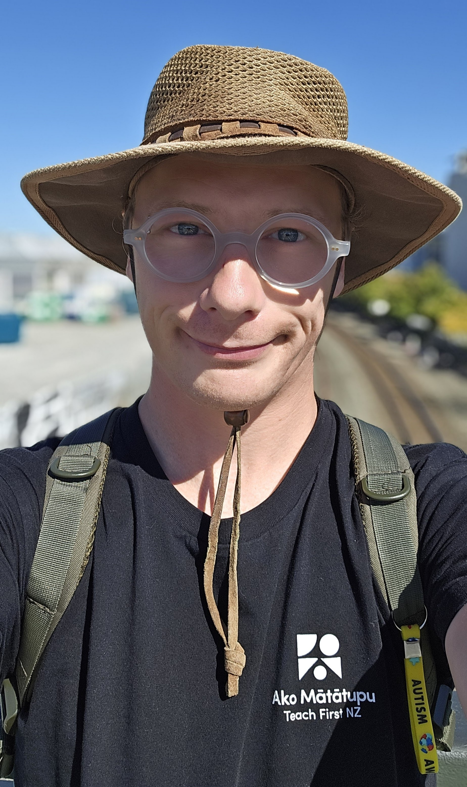

♾️ Autistic Developer · Gamer · Advocate ♾️
Hey! I'm Jericho, an independent developer. From low-level scripting to full-stack prototypes, I've been building, breaking, and fixing code for more than a decade. Comfortable in headless environments, CLI, and remote Linux servers. I build tools, mods, bots, and utilities. Sometimes I live-code projects from scratch on Twitch, break things, fix them, and document it along the way. I'm also a gamer, spending most of my time in Microsoft Flight Simulator, with occasional detours into Halo, Minecraft, and survival-horror games.
My goal is simple: create fun, useful, or just plain interesting stuff for people to enjoy or learn from.
"There's nothing quite like being able to say at the end of the day, I made this. This is my world."

I offer hands‑on development and troubleshooting - from static sites to deep game modding:
📬 Get in touch: chalwk.dev@gmail.com